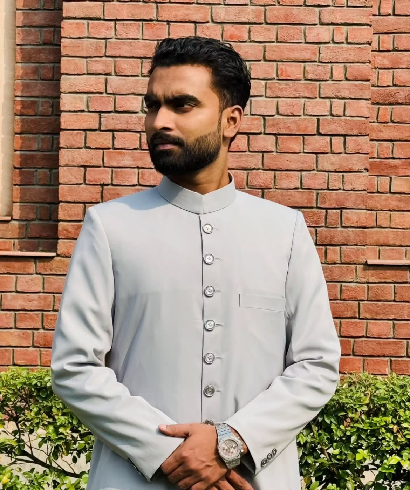
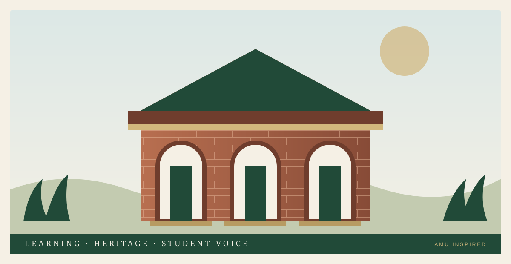
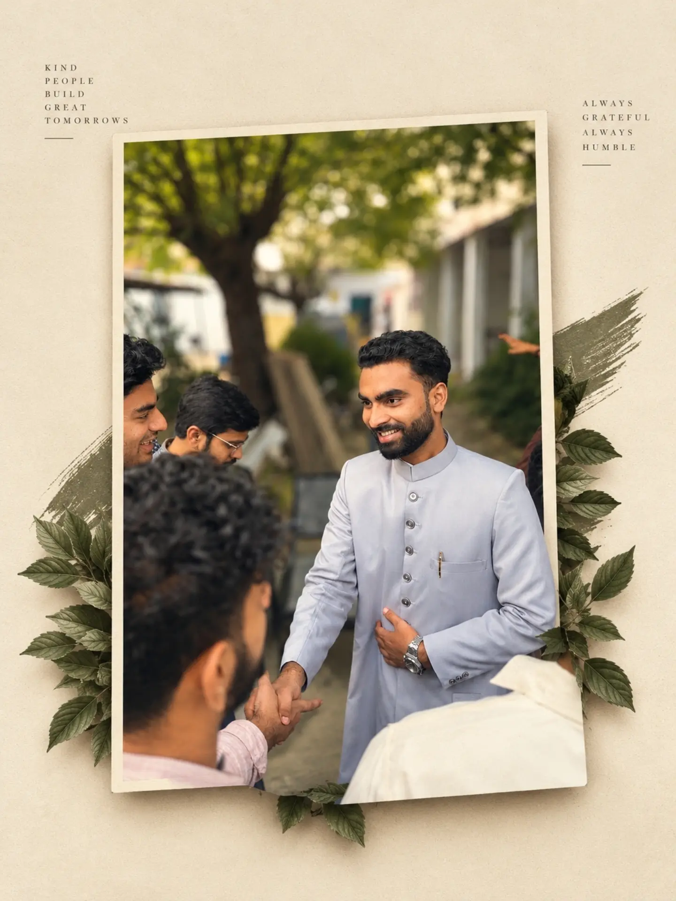
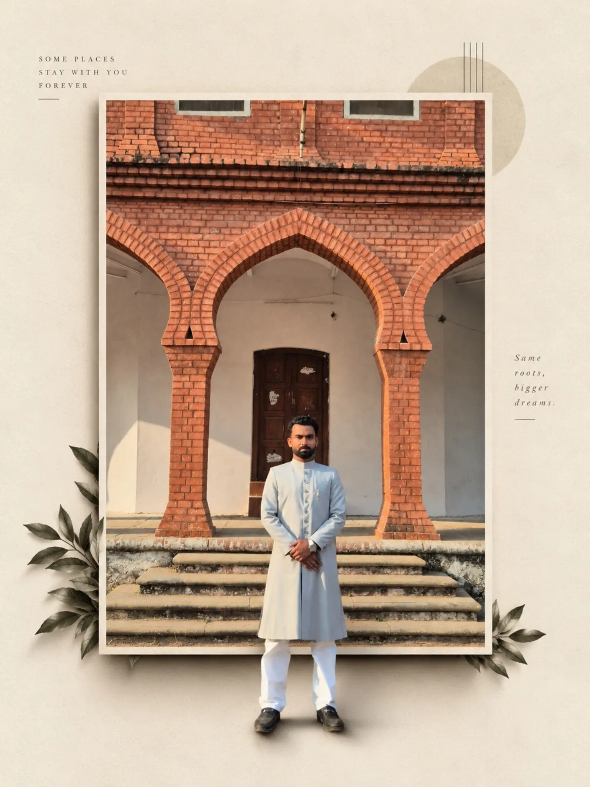
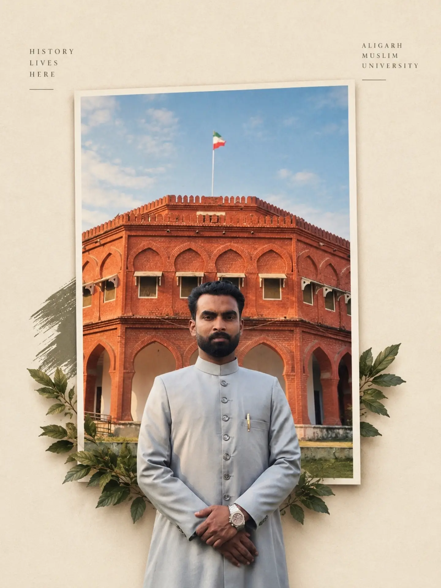
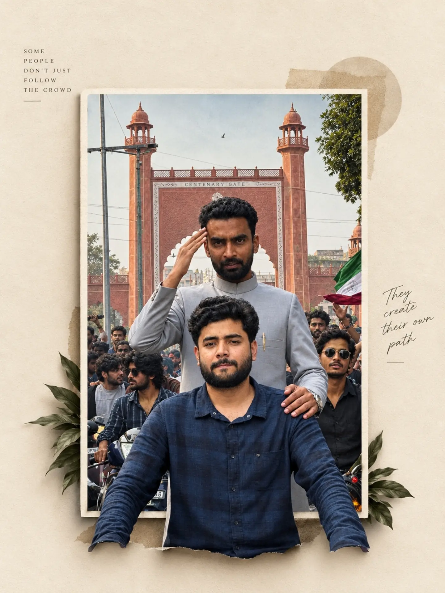
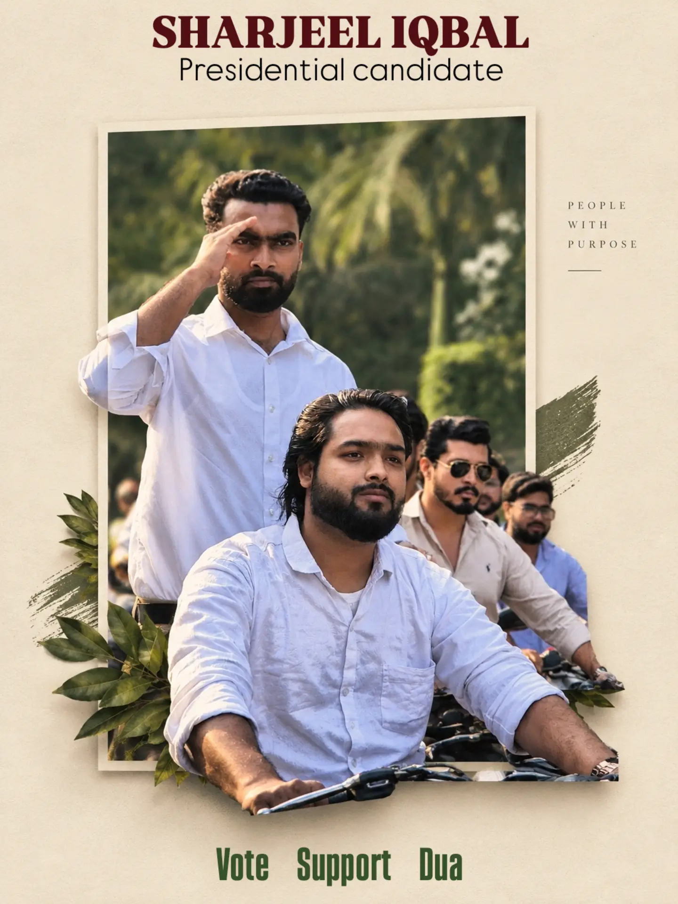

Aligarh Muslim University · AMUSU 2026–27
Leadership
with purpose.
A student-first vision built on listening, representation and responsible follow-through.

Candidate for
Sharjeel Iqbal
AMUSUPRESIDENT





